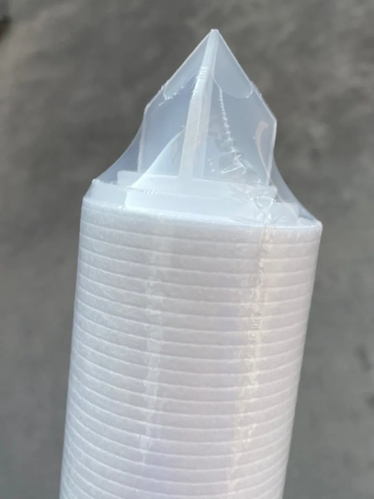
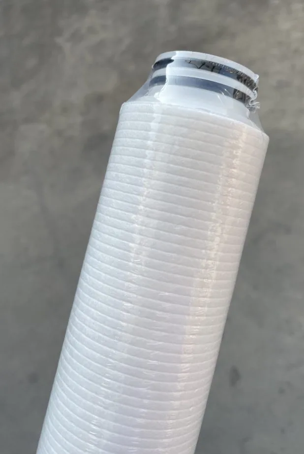

Өнеркәсіптік сүзгі CTO
Өнеркәсіптік сүзгі CTO көтерме су сүзу жобаларына арналған; сипаттама, қаптама және бренд белгісі OEM/ODM тапсырысына сай бейімделеді, экспорт алдында сапа бақылауы жүргізіледі.
Сұрау жіберу
Сығымдалған белсенді CTO көмір блогы өнімін Yuchen Water B2B дистрибьюторларына, импорттаушыларға және OEM/ODM брендтеріне жеткізеді. Конфигурация өлшемі, материалы, микрон рейтингі, ағын көлемі, жұмыс қысымы және қолданылуына қарай бейімделеді. Жеке бренд, сүзгі жапсырмасы, экспорттық қаптама және сапа құжаттары сұраныс бойынша қолжетімді.
| OEM/ODM | Сүзгі картриджі CTO |
|---|---|
| PP / CTO / GAC / UF / RO | OEM |
| 10 / 20 / 30 / 40 inch | OEM |
| μm / GPD / LPH | OEM |
| FOB / CIF / DDP | ✓ |
| ISO 9001 / CE / SGS | ✓ |
| MOQ | OEM |
← Өнімдер
Өнім моделі, саны, өлшемі немесе қуаты, логотип пен қаптама талаптары, жеткізу елі және порты қажет. Инженер OEM/ODM конфигурациясын жылдам растайды.
Иә. Yuchen Water логотип басу, сүзгі жапсырмасы, өнім түсі, нұсқаулық, картон қорап және экспорт белгілерін дистрибьютор талабына сай қолдайды.
MOQ өнімге және бейімдеу деңгейіне байланысты. Стандартты сүзгілерге сынақ тапсырысы қаралады; баспа, түс немесе жеке қалып көлемі сипаттама бойынша расталады.
Таңдалған өнімдер NSF/ANSI 42, 53 және 58 талаптарына сай жеткізілуі немесе сыналуы мүмкін. ISO 9001, CE, SGS және Halal құжаттары сұраныс бойынша беріледі.
Үлгілер мен стандартты өнімдер әдетте тезірек дайындалады. OEM баспа дизайн бекітілгеннен кейін шамамен 20-25 күн, күрделі жүйелер мен жабдық 30-45 күн шамасында.
FOB Shanghai/Ningbo қолжетімді; CIF, CFR және DDP талқыланады. Экспорттық қаптама өнімге және логистика бағытына қарай таңдалады.
Өнеркәсіптік сүзгі CTO көтерме су сүзу жобаларына арналған; сипаттама, қаптама және бренд белгісі OEM/ODM тапсырысына сай бейімделеді, экспорт алдында сапа бақылауы жүргізіледі.
Сұрау жіберу
Қанатты қақпағы бар PP melt blown сүзгі көтерме су сүзу жобаларына арналған; сипаттама, қаптама және бренд белгісі OEM/ODM тапсырысына сай бейімделеді, экспорт алдында сапа бақылауы жүргізіледі.
Сұрау жіберу
Силикон сақинасы бар PP melt blown сүзгі көтерме су сүзу жобаларына арналған; сипаттама, қаптама және бренд белгісі OEM/ODM тапсырысына сай бейімделеді, экспорт алдында сапа бақылауы жүргізіледі.
Сұрау жіберу
Өнеркәсіптік сүзгі PP SOE/DOE көтерме су сүзу жобаларына арналған; сипаттама, қаптама және бренд белгісі OEM/ODM тапсырысына сай бейімделеді, экспорт алдында сапа бақылауы жүргізіледі.
Сұрау жіберу